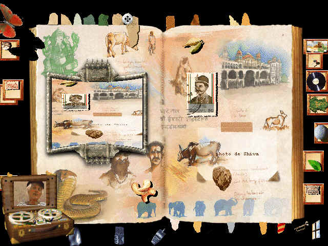

LE FABULEUX VOYAGE - SOLUCE
Voici quelques solutions (d’autres solutions existent pour certaines énigmes ou certains jeux)

Marseille
1- Faire la photo d’une mouette.
2- Coller la photo sur son emplacement. Les noms des villes correspondant à l’itinéraire apparaissent : Marseille, Palerme, Istanbul.
3- Sur la carte de la Méditerranée (trouvée dans l’introduction au milieu des rouages), cliquer sur les 3 villes correspondantes (dans le même ordre)
Port de Marseille
1- Repérer les bombes (forme de grenade) à l’intérieur des caisses et les supprimer en manoeuvrant l’aiguillage situé en haut de l’écran.
2- Tamponner les colis qui ressortent en bas avant qu’ils ne rentrent dans les trappes.
Le temps est limité. Il faut tamponner un maximum de caisses.
Istanbul
1- Placer les roues dentelées sur les bons emplacements. Une roue est manquante. Elle se trouve dans la salle des archives (Paris).
2- Quand tous les rouages sont en place on peut faire tourner les cercles portant des symboles en cliquant dessus. Faire tourner le grand cercle de façon à aligner le chien face à la pointe (à 11 heures). Tourner ensuite le cercle des lunes pour aligner la pleine lune (dorée) face à la pointe. Faire enfin tourner le petit cercle portant les signes astrologiques de façon à ce que le chien se retrouve à son tour face à la pointe.
3- Quand les trois symboles sont alignés face à la pointe, un support apparaît. Placer sur ce support la grenouille qui se trouve à Paris. Prendre le bout de parchemin qui apparaît alors.
Le Caire
1- On peut prendre 2 Sphinx en photo dans l’album. L’un est un dessin du Sphinx égyptien. On le trouvera dans le carnet de croquis situé dans la salle des archives.( Paris). L’autre Sphinx est un papillon que l’on trouve à Dakar. Quand on colle l’une des 2 photos sur l’emplacement prévu à cet effet, on accède à la page Nil.
2- Après avoir réussi le jeu du NIL et ZANZIBAR, on peut rapporter le papyrus et le poser sur son emplacement. Il s’enflamme laissant apparaître un morceau de parchemin.
Nil
Piloter le bateau (félouque) en évitant les obstacles qui peuvent faire couler le bateau : crocodiles, îlots, caisses… Attention il est préférable de ne pas rester immobile. Revenir toujours au centre de l’écran pour ne pas se trouver enfermé sur un côté.
Zanzibar
1- En se servant de la coccinelle, pousser la pierre sur l’extrémité de la planche. Faire sauter la grenouille sur l’autre extrémité de façon à faire contrepoids. La pierre en percutant la bouteille la brise sans la casser. Après une deuxième tentative, elle la casse complètement et on peut alors s’emparer du papyrus.
2- Cette solution est plus radicale. Il suffit de poser un galet sur la bouteille pour la casser. On peut alors récupérer le papyrus et retourner le placer dans la page Le Caire pour le coller sur son emplacement.
3- Poser le tatou dans la page – il casse la bouteille.
Bombay
Rapporter dans la page le Sphinx à tête de mort qui se trouve à Dakar. Ce papillon porte une tache en forme de tête de mort sur son thorax. Attendre qu’il se pose en face du miroir. Cliquer sur son reflet dans le miroir, le miroir se brise : on accède à la page TEMPLE. En revenant plus tard dans la page avec la photo de Shiva : coller la photo sur son emplacement : la page s’ouvre. On accède à la page PARCHEMIN.
Temple
1- Il faut placer les morceaux de la sculpture représentant Ganesh (enfant à tête d’éléphant) sur le socle devant la porte.
2- Une fois l’éléphant complètement monté : tourner les 3 miroirs de façon à les orienter de façon perpendiculaire face à la sculpture.
3- Lorsque Shiva apparaît : le prendre en photo.
Parchemin
Prendre le gri gri. Il sera utile chez le sorcier pour obtenir la formule de l’Elixir.
Une fois tous les parchemins découverts on obtient le message suivant :" SUR LA CARTE DU MONDE, LE SCARABEE D’OR POSE SUR L’ILE DE PAQUES TE DEVOILERA LE SECRET DE L’ALBUM. "
Se rendre sur le planisphère. Placer le sextant sur son emplacement. Prendre les coordonnées de l’île de Pâques dans la salle des archives. Repérer sur la carte l’île de Pâques grâce à ses coordonnées. Placer sur l’île de Pâques le scarabée d’or trouvé dans la salle des archives (Paris). La page s’ouvre. On accède à la chaudière.Bangkok
1- Se rendre sur le planisphère pour photographier la région de Bornéo sur la carte. Pour être valable la photo doit avoir la légende Bornéo.2- Rapporter la photo dans la page et la poser sur son emplacement. La page s’ouvre. On accède à la page Bornéo.
Bornéo
Il s’agit de " piloter " la libellule au milieu des plantes carnivores de façon à placer un maximum de graines de pollen rouges sur la nénuphar au centre de l’écran.
La libellule en passant sur les fleurs dispersées dans l’écran prend les graines de pollen pour les poser sur le nénuphar situé au centre de la page. (elle ne peut en prendre qu’une à la fois)
Une fois le nénuphar rempli, il s’enfonce et laisse apparaître un trou dans lequel l’enfant va trouver un bout de parchemin.
NB : On pourra " tricher " en fermant les plantes carnivores à l’aide de l’acide.
NB : La page étant couverte d’eau, les animaux nagent ou plongent, les objets flottent ou plongent…
NB : Les plantes carnivores mangent les papillons sauf le Sphinx Tête de mort. Elles recrachent les mouches.
Manille
1- Il y a deux façons d’ouvrir le cadenas : utiliser la clé trouvée à Bangkok ou l’acide Ernestique fabriqué dans le laboratoire grâce à la recette trouvée dans la salle des Archives.
2- Une fois le cadenas ouvert, en appuyant sur le bouton rouge, on fait apparaître l’écran de contrôle permettant de conduire un bateau à moteur au milieu des îles jusqu’à l’île du crocodile.
3- L’île du crocodile est située à l’est (droite de l’écran). La route directe plein Est n’est pas possible à cause des courants. Faire le plein au point A. Descendre au sud et remonter en contournant la côte.
Une fois la photo de Grandgousier réussie à Sydney, revenir dans la page afin de la poser sur son emplacement.
Ile du crocodile
1- Se rendre sur le Planisphère. Prendre les 4 fourmis. Placer chaque fourmi entre les montants de la roue. Une fois en position, les 4 fourmis tournent la roue. Si une fourmi un peu récalcitrante ne veut pas rester en position, la remettre de force !
2- Une fois le sous-marin en position à la surface de l’eau, retourner dans la page Manille pour noter les chiffres correspondant à la latitude de Sydney. (3 et 4).
NB : On peut aussi trouver les coordonnées de Sydney sur le planisphère si on a placé dans la page le sextant découvert à Tahiti.
3- Ouvrir le papier froissé représentant l’alphabet morse pour pouvoir convertir les 3 et 4 en morse. La solution est : ..._ _...._
4- Cliquer sur l’émetteur. (languette métal au dessus de la roue). Un coup long correspond à un tiret, un court à un point.
Lorsque un chiffre est bon, il s’affiche sur le cadran. Quand les chiffres 3 et 4 sont affichés, le sous-marin plonge. On accède à l’écran Sydney.Sydney
L’objectif de ce jeu est de faire descendre le sous-marin dans les grandes profondeurs afin de photographier le Grangousier. (sorte de serpent de mer.) Pour cela il y faut actionner vers la gauche le levier situé en bas à droite de l’écran. Pour stopper le sous-marin il faut placer le levier au centre. Pour remonter, il faut actionner le levier vers la droite.
Plus on descend, plus le sous-marin prend l’eau. La jauge bleue indique le niveau d’eau à l’intérieur du sous-marin. La jauge rouge indique la profondeur.
Quand la jauge bleue est remplie, le courant est coupé. Le sous-marin remonte automatiquement à la surface. Il faut recommencer.
Il faut donc colmater les brèches dans la coque (avec les planches en bois en bas à gauche) afin de réussir à descendre suffisamment profond pour photographier le grandgousier.
Une fois la photo réussie, il suffit de retourner la coller sur la page Manille. On obtient alors un nouveau morceau de parchemin.
Tahiti
Repérer les endroits usés des cordes.1- Poser le crabe qui se trouve à Bangkok dans la page. Le faire venir en face des endroits usés et cliquer sur lui pour fermer ses pinces.(Elles couperont les cordes). Attention le crabe ne coupe les cordes que dans certaines positions.
2- Se servir du feu (allumettes trouvées à Paris) sur les endroits usés des cordes pour les couper.
Dans la trappe on trouvera un sextant. Se rendre sur le planisphère et le placer sur son socle. Une fois en position, on pourra obtenir la latitude et la longitude d’un point sur la carte du monde.
Los Angeles
1- Placer sur le socle en bas à gauche de l’écran les pièces de robot dans le bon ordre.2- Mettre de l’huile sur le robot en cliquant sur la burette présente dans la page. Ernesto va mettre en marche le cadran horaire.
3- Se rendre sur le planisphère. Mettre la pendule Los Angeles à l’heure indiquée par le cadran. Noter les heures des autres villes.
4- Revenir dans la page et cliquer sur les chiffres pour mettre les pendules à l’heure.
L’opération réussie permet l’accès à l’Aérodrome.
Aérodrome
1- Résoudre l’énigme mathématique. "110-10-1010". 1 signifie activé. 0 non activé. Il faut donc cliquer sur les emplacements suivants :Cliquer ensuite sur le bouton clignotant. L’avion décolle. On accède à la page Mexico.
NB : Si on clique sur 5 chiffres au hasard, l’avion décolle mais s’écrase plus loin. On revient dans la page pour une nouvelle tentative.
2- Placer la mouche trouvée dans l’île du crocodile dans la page. Elle vole et se pose sur la carte en la perforant à plusieurs endroits. (les mêmes que les précédents) Si on place une autre mouche, elle perfore d’autres trous. L’avion décolle mais s’écrase plus loin.
Hollywood
Placer les bobines de films trouvées dans l’album sur le projecteur afin de pouvoir les visionner. Voici où trouver les films :- Film 3 : chez le Sorcier
- Film 4 : dans l’Ile du crocodile
- Film 5 : dans la Grotte - fin du jeu
Mexico
Pour faire venir le tatou, placer un insecte dans l’écran : mouche, fourmi ou coccinelle. Le mécanisme se met en route quand le tatou est au centre du cercle. Les 5 points de couleur (lampes) clignotent alors ensemble pendant 10 secondes, signal du départ, puis s’éteignent.- 1er défi : il faut d’abord réussir à allumer toutes les lampes en même temps en cliquant sur les ampoules. (chacune ne reste éclairée que 2 secondes).
- 2ème défi : les lampes s’allument les unes après les autres de manière aléatoire 5 fois. Il faut reproduire sans erreur le signal en cliquant sur les lampes. On pourra noter les points sur une feuille pour s’en souvenir. Quand on perd, les ampoules clignotent simultanément pendant 10 secondes.
Cliquer sur la tête pour démarrer le jeu. Les deux défis réussis, la tête sculptée ouvre lentement sa bouche et dévoile l’un des 7 morceaux de parchemin.
Caracas
1- Faire descendre l’Ernestophone en cliquant sur le bouton présent dans la page de gauche.
2- Placer sur le tapis roulant situé en dessous un animal capable de faire tourner les disques à la bonne vitesse. Il y en a trois : coccinelle, scarabée ou cerf-volant. Deux disques sont présents dans la page.
3- Se rendre dans la page Archives pour prendre les 2 autres disques. Placer sur l’Ernestophone le disque de flûte. Sa musique attire le toucan dans la page. Il suffit de cliquer sur lui pour accéder à la page Amazonie.
Autre solution : placer Ernesto dans la page. Il donne une indication d’heure impossible : 07h62. C’est justement la combinaison du coffre !
A l’intérieur du coffre on trouvera l’un des 6 morceaux de parchemin ainsi qu’une bouteille contenant du venin de crotale. Celui-ci est nécessaire à la réalisation du liquide antivenimeux. Ce liquide permettra de redonner vie aux animaux paralysés par le serpent dans la Brousse.
Amazonie
Cliquer sur le nid en haut à gauche de l’écran pour faire sortir une chenille. Prendre la feuille jaune pour attirer la chenille vers les feuilles situées en bas à droite.Placer la pierre de façon à bloquer l’araignée venant de la gauche. Faire descendre la chenille tout en bas puis la faire longer le bord de l’écran jusqu’aux feuilles. En mangeant les feuilles elle fera apparaître le code secret qui permet d’ouvrir le coffre. Le code est 0-7-6-2.
Dakar
Cliquer sur les différentes partie de la statuette pour la conformer au modèle donné dans le papier froissé.Brousse
Faire traverser la libellule jusqu’à la fleur. Noter les emplacements piégés de façon à les éviter lors d’une autre tentative. Ne pas passer sur la case 11 (en comptant de haut en bas et gauche à droite) car cela déplace les pièges.
NB : Une case est occupée par un serpent venimeux. Son venin agit sur certains animaux : cerf-volant, scarabée noir, tatou, crapaud, grenouille et tortue. Seul le sérum antivenimeux permettra de les refaire bouger. Il peut être fabriqué dans le laboratoire grâce à la recette trouvée plus loin chez le sorcier.
Sorcier
1- Placer les 3 crapauds sur les 3 emplacements en osier, pour cela cliquer sur le crapaud à l'opposé du sens où l'on souhaite qu'il avance. Par exemple cliquer à gauche pour qu'il saute à droite, cliquer derrière pour qu'il avance. Ne pas essayer de les attraper à la main et de les poser, cela ne fonctionne pas (attention chaque crapaud reste en place 10 seconde puis s'en va). Les crapauds sont cachés dans un papier froissé.
2- Quand cette première épreuve est réussie des osselets apparaissent. En cliquant sur les osselets posés au sol, on obtient différentes combinaisons.
rois combinaisons font apparaître des parchemins. Sur ces parchemins on trouvera 3 recettes magiques. Pour finir le jeu il faut absolument trouver la recette de l’Elixir. Se rendre dans la page Parchemin (Bombay) pour y prendre le gri gri porte chance. En le posant chez le sorcier on augmente ses chances de faire apparaître la recette de l’Elixir.
Paris
1- Cliquer sur la boite d’allumettes puis placer la flamme au centre de la page. Cliquer ensuite sur la zone dégagée.
2- La grenouille doit être présente dans la page. Cliquer sur l’un des cadrans pour le faire tourner. Quand le cadran est sur la bonne position, la grenouille coasse. Passer au suivant. Quand les 4 cadrans sont en position, la porte s’ouvre. On voit 2 portes. L’une conduit au laboratoire, l’autre à la salle des archives.
Laboratoire
On retrouve le laboratoire de l’album secret enrichi de nouvelles fonctionnalités dont certaines sont indispensables pour sauver l’album.L'analyseur
On peut analyser les animaux en les posant sur la plaque en bas de l’écran et en cliquant sur la flèche clignotante pour faire défiler le texte correspondant. On obtiendra ainsi de nombreux indices.
L'alambic
Cliquer sur l’un des boutons situés en bas à droite. Une partie de l’écran s’ouvre. On voit apparaître un récipient. Si vous avez trouvé une recette dans l’album, tremper les ingrédients correspondants (les uns après les autres) pour fabriquer la recette puis cliquer sur le gros bouton (flamme) pour faire chauffer.
Les éprouvettes
Situées en haut à gauche de l’écran, les 4 éprouvettes permettent d’agir sur les animaux de la façon suivante :
- Fiole 1 (active) : transforme un animal en un autre. Permet de faire apparaître de nouveaux animaux dont certains peuvent être utiles.
- Fiole 2 jaune : acide Ernestique (pour l’activer, il faut réaliser la recette correspondante dans l’alambic. La recette est cachée dans la salle des archives). Permet de faire des trous dans les pages. Casse les cadenas. Ferme les plantes carnivores.
- Fiole 3 verte : sérum antivenimeux (pour l’activer, il faut réaliser la recette correspondante dans l’alambic. La recette est cachée chez le sorcier). Elle permet de redonner vie à un animal mordu par le serpent dans la Brousse. Poser l’animal paralysé sur la plaque et cliquer sur la fiole.
- Fiole 4 rouge : liquide magique (pour l’activer, il faut réaliser la recette correspondante dans l’alambic. La recette est cachée chez le sorcier). Transforme momentanément l’aspect d’un animal. Inutile mais rigolo.
L'Elixir :
Pour fabriquer l’Elixir : se rendre à Dakar pour prendre la recette chez le sorcier. Chercher ensuite les ingrédients dispersés dans l’album. Réaliser enfin la recette dans l’alambic en trempant les ingrédients les uns après les autres avant de faire chauffer. Quand le flacon est bleu : on peut le prendre pour aller le poser dans la chaudière.
Salle des archives
Cet endroit est important. On y trouvera en effet des indices précieux et des objets indispensables notamment :- Un dessin de Sphinx dans le carnet de croquis (pour la page Le Caire)
- Le disque permettant d’attirer le toucan (Caracas)
- Les coordonnées de l’île de Pâques
- Le rouage permettant de faire fonctionner le mécanisme à Istanbul
- La recette de l’acide Ernestique
- Le scarabée d’or permettant l’ouverture de la chaudière
Planisphère
Prendre les fourmis (indispensables pour faire partir le sous-marin).
Bouger les aiguilles des 4 horloges pour obtenir facilement les décalages horaires des 4 villes (voir page Los Angeles)
Prendre la région de Bornéo en photo pour la page Le Caire.
NB : Les noms de pays s’affichent dès que le curseur les survole. Dès qu’une ville a été découverte dans l’album, elle s’affiche sur la carte. On pourra reconstituer ainsi le tour du monde de l’oncle Ernest.
NB : Placer le sextant trouvé à Tahiti sur son emplacement (bouton en bas à gauche). Une fois en position, on obtient les coordonnées (latitude et longitude) d’un point sur la carte.